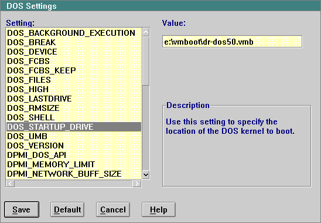

DOS Settings - DOS_STARTUP_DRIVE
This illustration shows the specification of a DOS diskette image named DR-DOS50.VMB, located on hard disk.
[Back: The Program Page of the Settings Notebook for a VMB]
[Next: VMB from an OS/2 V2.0 Program]